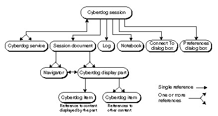
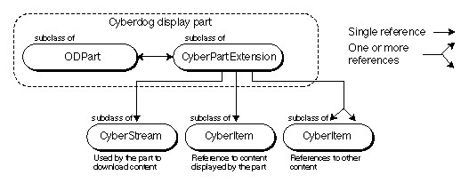
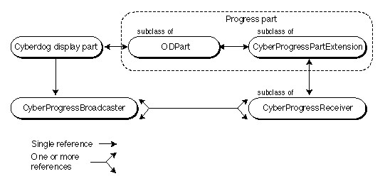
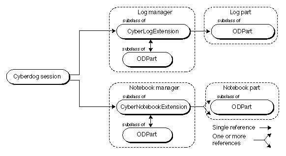
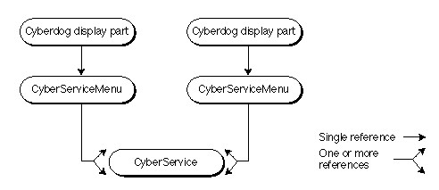
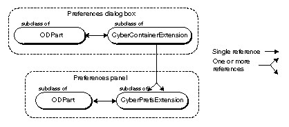
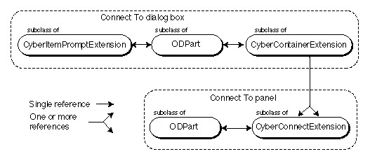

Legacy Document
Important: The information in this document is obsolete and should not be used for new development.
Important: The information in this document is obsolete and should not be used for new development.


Runtime Object Relationships
The runtime state of Cyberdog involves relationships among a variety of objects instantiated from Cyberdog classes. Taken together, the diagrams in this section show the principal runtime relationships among the major Cyberdog objects. The details of the interactions among the objects are explained elsewhere in this book.The Cyberdog Session
Figure 2-4 shows a runtime object diagram depicting the references among the key objects in a Cyberdog session.Figure 2-4 Object relationships of the Cyberdog session

All of the objects in a Cyberdog session share the same process. The Cyberdog session has multiple Cyberdog service objects, one for each supported service. The Cyberdog session maintains references to the log, notebook, Connect To dialog box, and Preferences dialog box.
In addition, the Cyberdog session has a single session document that contains all open navigators. The session document also contains all open Cyberdog display parts, some of which may be embedded in navigators.
A Cyberdog display part displays the content referenced by a Cyberdog item; the display part may also keep track of other Cyberdog items that correspond to other remotely located content.
- Note
- In Figure 2-4, the log, notebook, navigator, Preferences dialog box, and Cyberdog display part are all actually composed of two objects: an object of an
ODPartsubclass extended with the appropriate extension object. For example, the log is an object of anODPartsubclass extended with an object of aCyberLogExtensionsubclass. The Connect To dialog box is an object of anODPartsubclass with two extensions: an extension subclassed fromCyberContainerExtensionand an extension subclassed fromCyberItemPromptExtension.
Display Part Objects
Figure 2-5 shows the runtime object relationships among the objects involved with a Cyberdog display part.Figure 2-5 Object relationships of Cyberdog display parts

A Cyberdog display part is composed of an object of an
ODPartsubclass extended with a subclass ofCyberPartExtension. A Cyberdog display part displays the content referenced by its Cyberdog item (an object of aCyberItemsubclass). If the displayed content includes links to other network data, the Cyberdog display part creates and caches a Cyberdog item for each link.When the Cyberdog display part needs to download the content referenced by its Cyberdog item, it creates a Cyberdog stream (an object of a
CyberStreamsubclass) and uses it to download the data. When the data is finished downloading, the Cyberdog display part deletes the Cyberdog stream.
- Note
- Figure 2-5 shows the part extension maintaining the references to the Cyberdog items and the Cyberdog stream. In fact, the references can also be maintained by the part itself. Whether the references are maintained in the a Cyberdog display part or its extension depends on the implementation.
Progress Monitoring Objects
Figure 2-6 shows the runtime object relationships among objects used to monitor and display the progress of an asynchronous process.Figure 2-6 Object relationships of progress monitoring objects

When a Cyberdog display part initiates an asynchronous process, it creates a progress broadcaster object. The display part acquires a progress part (the navigator, for example) and attaches the progress broadcaster to the progress part. The progress part has an associated progress receiver. The progress part attaches its progress receiver to the progress broadcaster.
The Cyberdog display part monitors the asynchronous process and updates the progress values in the progress broadcaster accordingly. The broadcaster notifies its attached receiver of the updates. The progress part retrieves progress information from its receiver and updates its display.
Typically, a single broadcaster is attached to a single receiver. However, it is possible to attach multiple receivers to a broadcaster or multiple broadcasters to a receiver.
Log and Notebook Objects
Figure 2-7 shows the runtime object relationships among objects used to create the Cyberdog log and notebook.Figure 2-7 Object relationships of the log and notebook

The Cyberdog session maintains references to the Cyberdog log and the Cyberdog notebook.
The Cyberdog log implementation is divided between two parts: a log manager and a log part. The Cyberdog log manager (
kLogManagerKind) is composed of an object of anODPartsubclass extended with a subclass ofCyberLogExtension. The log manager does not provide a user interface. The log user interface is provided by the log part (kLogKind). The log part is an object of anODPartsubclass.Similarly, the Cyberdog notebook implementation is divided between two parts: a notebook manager and a notebook part. The Cyberdog notebook manager (
kNotebookManagerKind) is composed of an object of anODPartsubclass extended with a subclass ofCyberNotebookExtension. The notebook manager does not provide a user interface. The notebook user interface is provided by the notebook part (kNotebookKind). The notebook part is an object of anODPartsubclass.Service Menu Objects
Figure 2-8 shows the runtime object relationships among objects used to display service-related menus for a Cyberdog display part.Figure 2-8 Object relationships of service menu objects

A Cyberdog display part may choose to display the Cyberdog menu and Cyberdog service-related menus when the part gets the focus. To do this, the Cyberdog display part creates a single
CyberServiceMenuobject. When the Cyberdog display part adjusts its menu bar, receives a menu event, or acquires or loses the menu focus, it notifies theCyberServiceMenuobject. TheCyberServiceMenuobject iterates through all of the Cyberdog services, giving each service the opportunity to handle its menus.Dialog Box Objects
This section describes the runtime object relationships among objects used to create the Cyberdog Preferences and Connect To dialog boxes.Preferences Dialog Box
Figure 2-9 shows the runtime object relationships among objects used to create the Cyberdog Preferences dialog box.Figure 2-9 Object relationships of the Preferences dialog box

The Cyberdog Preferences dialog box is composed of an object of an
ODPartsubclass extended with a subclass ofCyberContainerExtension. The Preferences dialog box embeds multiple Preferences panels. Each Preferences panel is composed of an object of anODPartsubclass extended with a subclass ofCyberPrefsExtension.Connect To Dialog Box
Figure 2-10 shows the runtime object relationships among objects used to create the Cyberdog Connect To dialog box.Figure 2-10 Object relationships of the Connect To dialog box

The Cyberdog Connect To dialog box is composed of an object of an
ODPartsubclass and two extensions: a subclass ofCyberContainerExtensionand a subclass ofCyberItemPromptExtension. The Connect To dialog box embeds multiple Connect To panels. Each Connect To panel is composed of an object of anODPartsubclass extended with a subclass ofCyberConnectExtension.